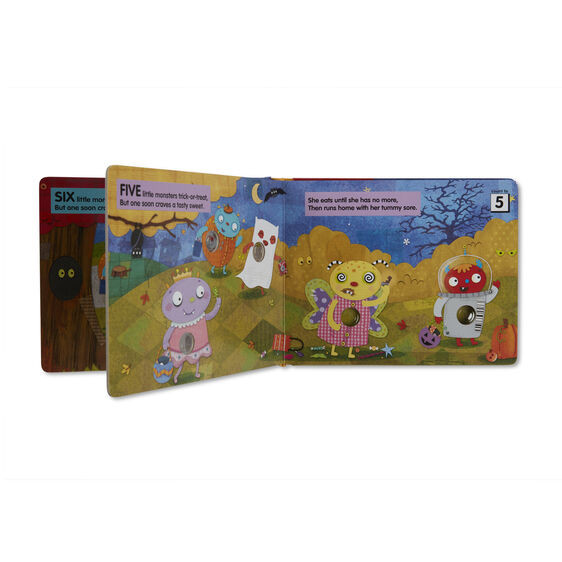
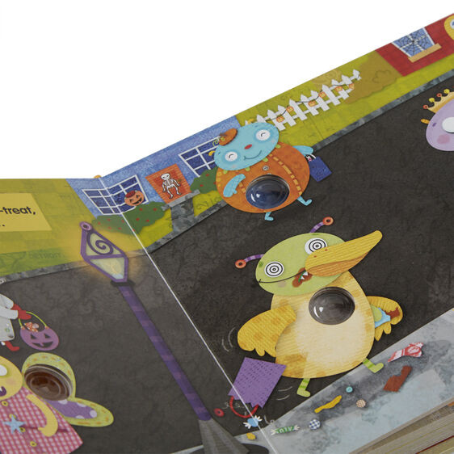

Available
Poke-A-Dot: 10 Little Monsters
Books
R300Read the catchy rhyme and count down till all the trick-or-treaters have gone to bed Poke-a-Dot books encourage language development, counting, and fine motor skills Makes a great gift for preschoolers to early readers, ages 3 to 7, for hands-on, screen-free play 20-page interactive sturdy board book with buttons to press and pop on every page Dots make different clicking and popping sounds depending on how theyre poked Product: 7.25
Enquire about this product


Poke-A-Dot: 10 Little Monsters at Kids Corner KZN
Poke-A-Dot: 10 Little Monsters is part of our Books collection. Kids Corner KZN stocks toys for learning, pretend play, creative play, gifting and everyday childhood discovery in South Africa.
Browse more Books toys